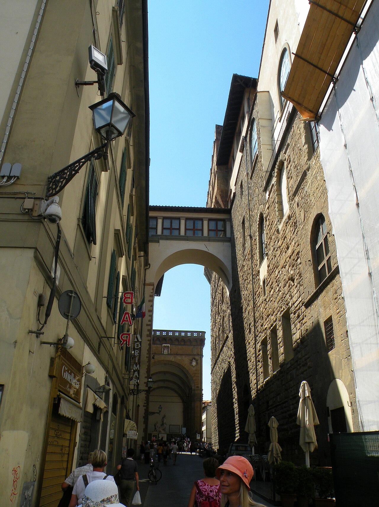

Lume Arno
Plan your visit
Practical notes so the city can stay spacious—timing, tickets, and gentle logistics.
When to go
Season shapes the day
There is no empty Florence—only different kinds of fullness.
- Spring
- Mild walks, longer evenings, and gardens coming into leaf. Book major museums early for Easter weeks.
- Summer
- Start at opening, rest midday, return after heat softens. Carry water; seek stone shade and riverside air.
- Autumn
- Clear light over the hills and fewer midday crowds. A favorite window for unhurried gallery days.
- Winter
- Quieter streets and earlier sunsets. Dress for damp stone; many interiors feel especially calm.
Tickets & timing
Book the essentials, leave room to wander
Reserve what fills up; keep open blocks for streets and chance discoveries.
- Secure timed tickets for flagship galleries and dome climbs before peak season.
- Cluster nearby sites on the same day so you’re not crossing the center twice.
- Confirm seasonal hours the morning of—closures for holidays or special events do happen.
- Keep one half-day without reservations for markets, coffee, and getting lost well.
Getting around
Most of Florence is a walk
The historic center rewards feet; hills and longer hops need a little planning.

Move lightly
Wear shoes meant for cobbles. For Piazzale Michelangelo and San Miniato, walk up if you’re comfortable with a climb, or take a local bus and walk the last stretch. Taxis help with luggage and late evenings; cars are a poor fit inside the limited-traffic zone.
See hillside viewpoints →Next
Ready to choose a path?
Return to Explore for art rooms, street walks, and views above the rooftops.
Browse things to do